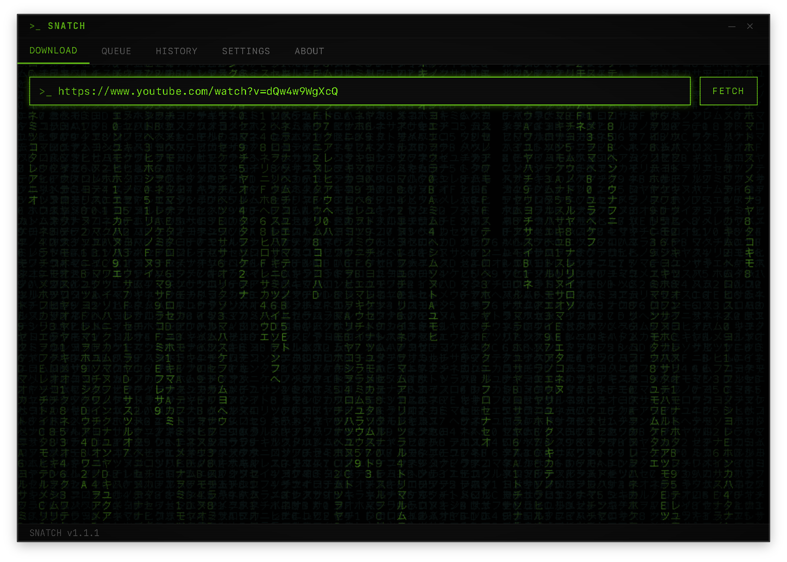
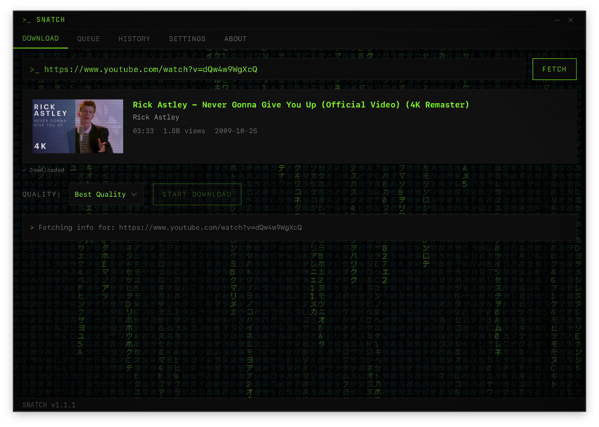
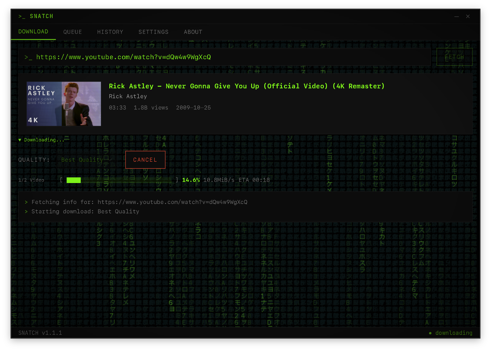
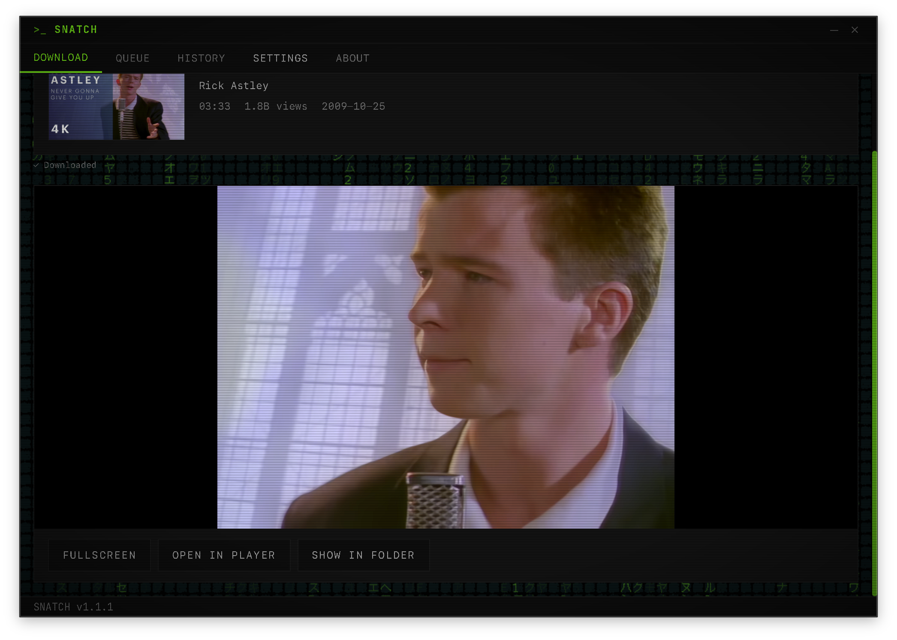
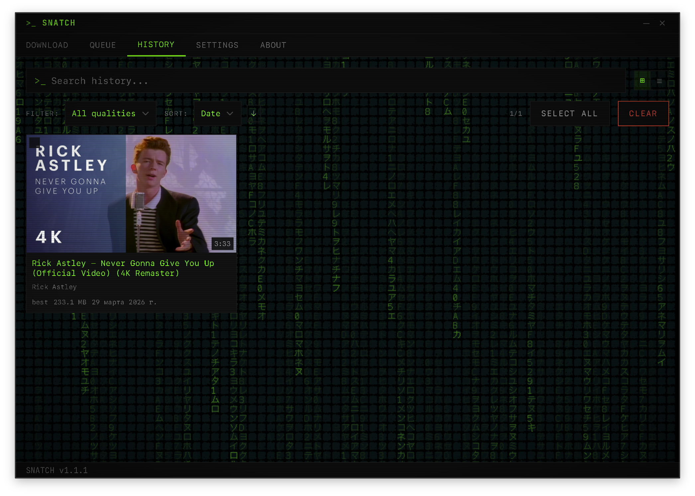
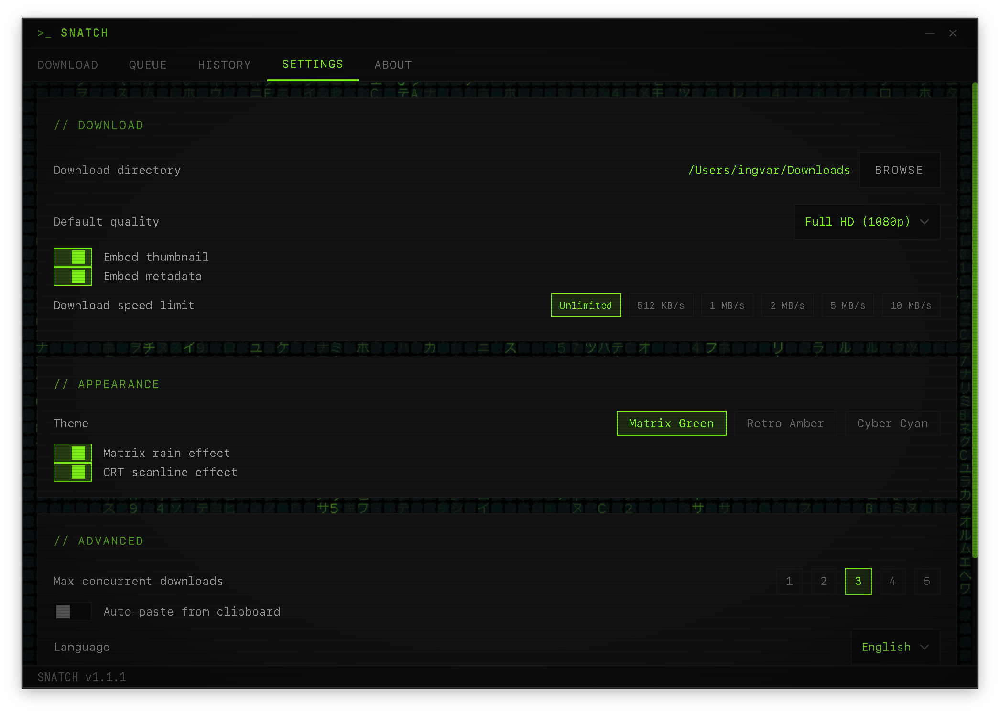
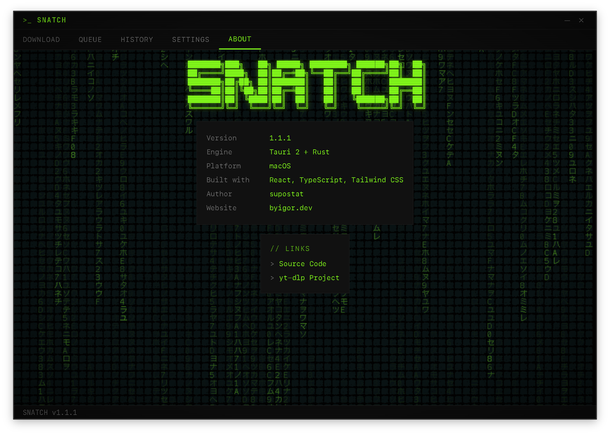

YouTube video downloader with retro hacker aesthetic
Fast. Lightweight. Open source.







Download in any quality from 480p to 4K, or extract audio as MP3. Powered by yt-dlp.
Fetch entire playlists, select individual videos, and queue them for batch download.
Add multiple URLs, set concurrent downloads (1-5), and let it run in the background.
URL validation, path traversal protection, yt-dlp flag whitelist, SHA256 binary verification.
~10MB binary. No Electron, no Chromium. Tauri + Rust backend with system WebView.
CRT scanlines, matrix rain, 3 color themes (green, amber, cyan). JetBrains Mono font.
Desktop notifications when downloads complete. System tray for background operation.
English and Russian interface. Auto-detects system locale.
| SNATCH | Electron apps | CLI (yt-dlp) | |
|---|---|---|---|
| Binary size | ~10 MB | ~150 MB | ~20 MB |
| RAM usage | ~40 MB | ~300 MB | ~30 MB |
| GUI | ✓ | ✓ | ✗ |
| Playlist UI | ✓ | ✓ | CLI only |
| Auto-update | ✓ | ✓ | Manual |
| Open source | ✓ | Varies | ✓ |
Yes. SNATCH is free and open source under GPL-3.0 license.
Yes. On first launch, SNATCH downloads yt-dlp and FFmpeg automatically with SHA256 verification.
Run xattr -cr /Applications/SNATCH.app in Terminal. This removes the quarantine flag. We're working on Apple code signing.
Yes. Paste a playlist URL, select the videos you want, choose quality, and add them to the queue.
SNATCH uses yt-dlp which supports 1800+ sites, but the URL validator currently only allows YouTube domains.
By default in your Downloads folder. You can change it in Settings.